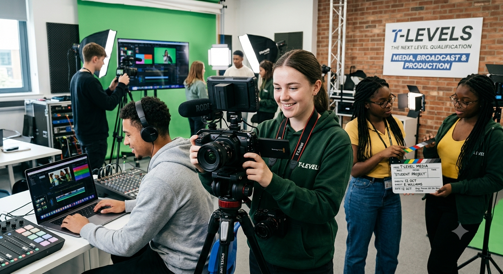

Develop the technical skills and real-world
experience needed for the world of media
here at Amazon
As a Media T Level student, you'll build on the communication, organisation, analytical, and digital skills developed through creative projects and real-world industry experience. You'll strengthen your ability to interpret data, solve problems, manage deadlines, and work collaboratively within a professional team. Throughout the apprenticeship, you'll gain a strong understanding of accounting, financial analysis, and budgeting while learning how financial data supports business decisions. This programme will provide the opportunity to develop valuable commercial awareness and apply transferable skills in a fast-paced, data-driven environment.
As a Finance Apprentice at Amazon, you'll join as a Financial Analyst and complete three rotations across different finance teams, gaining hands-on experience in areas such as Accounting, Finance, and Tax while developing an understanding of how financial decisions support a global business. Building on the communication, organisation, analytical, and digital skills developed through your Media T Level, you'll interpret financial data, support key business decisions, and combine technical learning with practical experience to build a strong foundation for a career in finance.
During your apprenticeship, you'll work on a variety of creative and digital media projects that reflect real industry practice. You'll develop content for different platforms, collaborate with teams and clients, use industry-standard software, and apply creative, technical, and communication skills to produce high-quality media while meeting professional deadlines.
During your T-Level, you'll do:
To be eligible for this apprenticeship, you must:
Duration - 42 months
Apprenticeship level - Level 4 Media professional
Environment - Corporate office
Working Hours - 40 hours per week
Learning Format - Mix of on-the job training, online study, and mentoring
Start Date - September 2026
We welcome applicants from all backgrounds who have a genuine interest in media.
You'll thrive if you:
You do not need prior media experience, just the motivation to learn and grow.
Completing the Media T Level opens doors to a wide range of careers across the creative and digital industries. You could progress into roles such as Content Creator, Digital Marketing Assistant, Social Media Executive, Production Assistant, or Junior Video Editor. With industry experience gained through your placement and practical, employer-focused skills, you'll be well positioned to continue into higher apprenticeships, university, or build a career in media production, marketing, broadcasting, advertising, or digital communications.